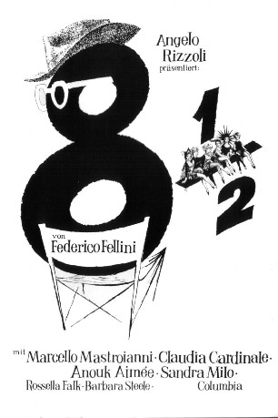

#4157 Achteinhalb
Alternativ: 8½
Auszeichnungen: 2 Oscars gewonnen für 3 Oscars nominiert
 
 IMDB-Wertung: 8.1 / 10
IMDB-Wertung: 8.1 / 10  Metascore: 0
Metascore: 0 
Regisseur Guido Anselmi steckt sowohl privat als auch künstlerisch in der Krise. Genervt von Produzenten, Ehefrau und Geliebter sucht er verzweifelt nach Inspiration für seinen neuen Film, dessen Drehbeginn er immer wieder verschiebt. Als er seine Kindheit, seine Beziehungen zu Frauen und sein Verhältnis zur Kunst und die Missstände in der Filmbranche reflektiert, kommen seine Ängste und verdrängten Komplexe aus dem Unterbewusstsein ans Licht. Traum und Wirklichkeit beginnen zur verschwimmen.
Jahr: 1963
Dauer: 138 Minuten
FSK: 12
Land: Italien Studio: Kinowelt Home EntertainmentTonspuren:
Untertitel:
Auflösung: 1080p (1920x1040) Größe: 7833 MB
Genre: Drama, Fantasy
Regisseur: Federico Fellini
Drehbuch: Randall Wallace
Soundtrack:
Darsteller:
 Marcello Mastroianni als Guido Anselmi
Marcello Mastroianni als Guido Anselmi Claudia Cardinale als Claudia
Claudia Cardinale als Claudia- Anouk Aimée als Luisa Anselmi
- Sandra Milo als Carla
 Barbara Steele als Gloria Morin
Barbara Steele als Gloria Morin- Madeleine Lebeau als Madeleine, l'attrice francese
- Caterina Boratto als La signora misteriosa
- Eddra Gale als La Saraghina
- Jean Rougeul als Carini, il critico cinematografico
- Ian Dallas als Il partner della telepata
- Edy Vessel als L'indossatrice
- Annie Gorassini als L'amica del produttore
- Annibale Ninchi als Il padre di Guido
- Maria Antonietta Beluzzi als Bit Part , uncredited
- Polidor als Un pagliaccio , uncredited
- Nino Rota als Bit Part , uncredited
- Rossella Falk als Rossella
- Guido Alberti als Pace, il produttore
- Mario Conocchia als Conocchia, il direttore di produzione
- Bruno Agostini als Bruno - il secondo segretario di produzione
- Cesarino Miceli Picardi als Cesarino, l'ispettore di produzione
- Mario Pisu als Mario Mezzabotta
- Yvonne Casadei als Jacqueline Bonbon
- Mino Doro als L'agente di Claudia
- Nadia Sanders als Nadine, la Hostess
- Georgia Simmons als La nonna di Guido
- Tito Masini als Il cardinale
- Rossella Como als Un'amica di Luisa
- Mark Herron als Il corteggiatore di Luisa
- Marisa Colomber als Una zia di Guido
- Neil Robinson als L'agente dell'attrice francese
- Elisabetta Catalano als Matilde, la sorella di Luisa
- Eugene Walter als Il giornalista americano
- Hazel Rogers als La negretta
- Gilda Dahlberg als La moglie del giornalista americano
- Mario Tarchetti als L'ufficio di stampa di Claudia
- Mary Indovino als La telepata
- Frazier Rippy als Il segretario laico
- Francesco Rigamonti als Un'amico di Luisa
- Giulio Paradisi als Un'amico
- Marco Gemini als Guido da ragazzo
- Giuditta Rissone als La madre di Guido
- Antonio Acqua als Bit Part , uncredited
- Gideon Bachmann als Bit Part , uncredited
- Agnes Bonfanti als Bit Part , uncredited
- Deena Boyer als Bit Part , uncredited
- Mathilda Calnan als Un'amica di Luisa , uncredited
- Giulio Calì als Un uomo ai fanghi , uncredited
- Franco Caracciolo als Young Priest , uncredited
- Anna Caramini als Bit Part , uncredited
Datei: X:\1963\Achteinhalb (1963, FSK12, 1920x1040).mkv seit 27.07.2016
Festplatte: HD 1900-1970
 Es gibt insgesamt 23 Filme in der Gruppe '1963'
Es gibt insgesamt 23 Filme in der Gruppe '1963'